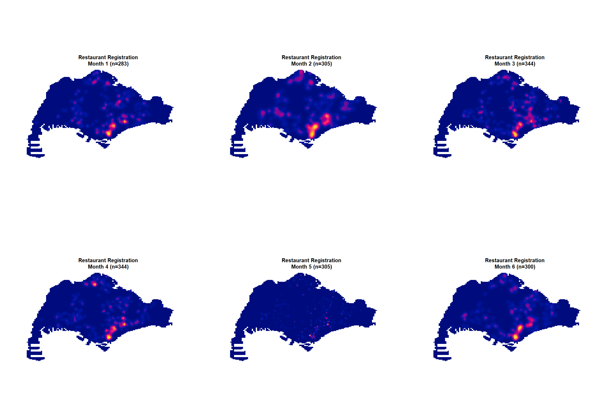
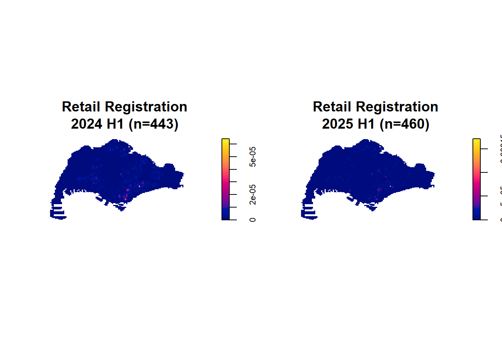

pacman::p_load(tidyverse, sf, tmap, httr, readxl, dplyr, stringr, rvest, knitr, spatstat, terra, raster, sparr, tidyr, kableExtra, ggplot2)Take-home Exercise 1 | Geospatial Analytics for Public Good
In this take-home exercise, we are interested to investigate the spatial and spatio-temporal patterns of new businesses and firms established in Singapore for the first six months of 2025.
1 Overview
1.1 Setting The Scene
Where businesses choose to locate plays a huge role in how Singapore continues to grow and develop as a city-state. Smart locations give companies advantages like easier access to skilled workers and excellent infrastructure, while also shaping different districts like the Central Business District, Jurong Innovation District, or Punggol Digital District, and making it easier for goods to move through our efficient transport networks and for employees to commute via MRT and buses.
Studying how businesses spread out across Singapore and change over time is crucial for urban planning by agencies like URA and JTC. This research helps planners understand how economic activity and our urban landscape develop together, enabling them to design better integrated developments, plan for future growth in areas like the Greater Southern Waterfront, use our limited land resources efficiently, and build infrastructure that supports both business competitiveness and residents’ quality of life in our compact island nation.
1.2 Objectives
To identify where and when new businesses are established in Singapore, revealing clusters, patterns, and trends that help inform urban planning, resource allocation, and economic development decisions.
To uncover complex relationships in how new businesses are distributed across the island - such as how related industries cluster together, how past business locations influence future ones, and how commercial districts develop structurally over time. These insights are essential for evidence-based urban planning and policy-making.
By understanding business locations and how their distribution evolves, Singapore’s urban planners and agencies can gain valuable spatial insights, optimize city operations, and develop effective strategies to attract investment and promote sustainable growth across our city-state.
2 Analysis Questions
- What spatial distribution patterns do different business types exhibit across Singapore?
- How do survival rates vary between business categories and specific SSIC codes?
- Which business types show clustering behavior versus random spatial distribution?
- What factors influence business location density and geographic concentration patterns?
2.1 The Data
| Dataset | Description | Source | Format |
|---|---|---|---|
| ACRA Information on Corporate Entities | Information of registered entities in Singapore, including location data | data.gov.sg | CSV |
| SSIC: Singapore Standard Industrial Classification 2020 | List of codes represented economic activity of business establishments in Singapore, 2020 version. | SSIC: Singapore Standard Industrial Classification | Excel |
| MasterPlan2019SubzoneBoundaryNoSeaKML | Polygon data with URA 2019 Master Plan Planning Subzone boundaries | data.gov.sg | KML |
3 Set up R environment
3.1 Import R Packages
3.2 Set Seed
set.seed(1234)4 Data Import & Preparation
4.1 ACRA Data
folder_path <- "data/aspatial/ACRA"
file_list <- list.files(path = folder_path,
pattern = "^ACRA*.*\\.csv$",
full.names = TRUE)
acra_data <- file_list %>%
map_dfr(read_csv)4.1.1 Extracting data of chosen business types
The chosen business types are as the following table:
| SSIC 3-digit prefix | Description | Alias for this analysis | SSIC 4-digit sub-types | SSIC 5-digit sub-types |
|---|---|---|---|---|
| 471 | Retail Sale in Non-Specialised Stores | Retail | 4710: Retail Sale in Non-Specialised Stores |
47101: Supermarkets and hypermarkets 47102: Mini-marts, convenience stores and provision shops 47103: Department stores 47104: Retail sale in other non-specialised stores n.e.c. |
| 561 | Restaurants, Cafes, Food Courts, Food Kiosks And Bars | Food & Beverage |
5611: Restaurants and Cafes 5612: Fast Food Outlets, Food Courts and Food Kiosks 5613: Pubs 5614: Stalls Selling Cooked Food and Prepared Drinks |
56111: Restaurants 56112: Cafes – 56121: Fast food outlets 56122: Food courts, coffee shops and canteens (with mainly food and beverage income) 56123: Food kiosks mainly for takeaway and delivery – 56130: Pubs – 56140: Stalls Selling Cooked Food and Prepared Drinks |
| 681 | Real Estate Activities With Own Or Leased Property | Real Estate | 6810: Real Estate Activities With Own Or Leased Property |
68101: Real estate developers 68102: Operating of serviced apartments 68103: Letting of self-owned or leased real estate property except food courts, coffee shops and canteens (e.g. office/exhibition space, shopping mall, self-storage facilities) 68104: Letting and operating of self-owned or leased food courts, coffee shops and canteens (with mainly rental income) 68105: Collective portfolio investment funds with rental income 68106: Management of self-owned strata titled property (i.e. Management Corporation Strata Title) |
# Read the files you just wrote
#| echo: false
#| eval: false
biz_selected <- read_rds("data/rds/biz_selected.rds")4.2 SSIC Data
# Read the Excel file
ssic_data <- read_excel("data/ssic2020-classification-structure.xlsx",
sheet = "SSIC 2020 Structure",
skip = 4) # Skip the header rows
# Clean the data - remove any rows where SSIC 2020 is NA
ssic_data <- ssic_data %>%
filter(!is.na(`SSIC 2020`))
# Filter to get only level 5 codes (5-character codes)
level5_data <- ssic_data %>%
filter(str_length(`SSIC 2020`) == 5)
# Create the hierarchy columns
ssic_hierarchy <- level5_data %>%
mutate(
# Level 2: First 2 characters (2-digit number)
level_2 = str_sub(`SSIC 2020`, 1, 2),
# Level 3: First 3 characters (3-digit number)
level_3 = str_sub(`SSIC 2020`, 1, 3),
# Level 4: First 4 characters (4-digit number)
level_4 = str_sub(`SSIC 2020`, 1, 4),
# Level 5: Full 5-character code
level_5 = `SSIC 2020`,
# Keep the title for reference
level_5_description = `SSIC 2020 Title`
) %>%
dplyr::select(level_2, level_3, level_4, level_5, level_5_description)# Add the descriptions for each level by joining with the original data
# Create lookup tables for each level
level_2_lookup <- ssic_data %>%
filter(str_length(`SSIC 2020`) == 2) %>%
dplyr::select(level_2 = `SSIC 2020`, level_2_description = `SSIC 2020 Title`)
level_3_lookup <- ssic_data %>%
filter(str_length(`SSIC 2020`) == 3) %>%
dplyr::select(level_3 = `SSIC 2020`, level_3_description = `SSIC 2020 Title`)
level_4_lookup <- ssic_data %>%
filter(str_length(`SSIC 2020`) == 4) %>%
dplyr::select(level_4 = `SSIC 2020`, level_4_description = `SSIC 2020 Title`)
# Join all the descriptions
ssic_final <- ssic_hierarchy %>%
left_join(level_2_lookup, by = "level_2") %>%
left_join(level_3_lookup, by = "level_3") %>%
left_join(level_4_lookup, by = "level_4") %>%
dplyr::select(level_2, level_2_description,
level_3, level_3_description,
level_4, level_4_description,
level_5, level_5_description)
# Display the structure
cat("Final dataset structure:\n")Final dataset structure:str(ssic_final)tibble [1,023 × 8] (S3: tbl_df/tbl/data.frame)
$ level_2 : chr [1:1023] "01" "01" "01" "01" ...
$ level_2_description: chr [1:1023] "AGRICULTURE AND RELATED SERVICE ACTIVITIES" "AGRICULTURE AND RELATED SERVICE ACTIVITIES" "AGRICULTURE AND RELATED SERVICE ACTIVITIES" "AGRICULTURE AND RELATED SERVICE ACTIVITIES" ...
$ level_3 : chr [1:1023] "011" "011" "011" "011" ...
$ level_3_description: chr [1:1023] "GROWING OF CROPS, MARKET GARDENING AND HORTICULTURE" "GROWING OF CROPS, MARKET GARDENING AND HORTICULTURE" "GROWING OF CROPS, MARKET GARDENING AND HORTICULTURE" "GROWING OF CROPS, MARKET GARDENING AND HORTICULTURE" ...
$ level_4 : chr [1:1023] "0111" "0111" "0111" "0111" ...
$ level_4_description: chr [1:1023] "Growing of Food Crops (Non-Hydroponics)" "Growing of Food Crops (Non-Hydroponics)" "Growing of Food Crops (Non-Hydroponics)" "Growing of Food Crops (Non-Hydroponics)" ...
$ level_5 : chr [1:1023] "01111" "01112" "01113" "01119" ...
$ level_5_description: chr [1:1023] "Growing of leafy and fruit vegetables" "Growing of mushrooms" "Growing of root crops" "Growing of food crops (non-hydroponics) n.e.c." ...cat("\nFirst few rows:\n")
First few rows:head(ssic_final, 10)# A tibble: 10 × 8
level_2 level_2_description level_3 level_3_description level_4
<chr> <chr> <chr> <chr> <chr>
1 01 AGRICULTURE AND RELATED SERVICE … 011 GROWING OF CROPS, … 0111
2 01 AGRICULTURE AND RELATED SERVICE … 011 GROWING OF CROPS, … 0111
3 01 AGRICULTURE AND RELATED SERVICE … 011 GROWING OF CROPS, … 0111
4 01 AGRICULTURE AND RELATED SERVICE … 011 GROWING OF CROPS, … 0111
5 01 AGRICULTURE AND RELATED SERVICE … 011 GROWING OF CROPS, … 0112
6 01 AGRICULTURE AND RELATED SERVICE … 011 GROWING OF CROPS, … 0113
7 01 AGRICULTURE AND RELATED SERVICE … 011 GROWING OF CROPS, … 0114
8 01 AGRICULTURE AND RELATED SERVICE … 011 GROWING OF CROPS, … 0114
9 01 AGRICULTURE AND RELATED SERVICE … 011 GROWING OF CROPS, … 0114
10 01 AGRICULTURE AND RELATED SERVICE … 011 GROWING OF CROPS, … 0119
# ℹ 3 more variables: level_4_description <chr>, level_5 <chr>,
# level_5_description <chr>cat("\nSummary:\n")
Summary:Total level 5 business types: 1023 Number of level 2 categories: 81 Number of level 3 categories: 204 Number of level 4 categories: 382 4.2.1 Join ACRA and SSIC Data
# Left join ssic_final to biz_selected
# Convert primary_ssic_code to character and pad with leading zeros if needed
biz_with_hierarchy <- biz_selected %>%
mutate(primary_ssic_code = sprintf("%05d", primary_ssic_code)) %>% # Ensures 5-digit format
left_join(ssic_final, by = c("primary_ssic_code" = "level_5"))
# Check the result
str(biz_with_hierarchy)
head(biz_with_hierarchy)# Read the files you just wrote
#| echo: false
biz_with_hierarchy <- read_rds("data/rds/biz_with_hierarchy.rds")##| eval: false
#| echo: false
# Check for any unmatched records
cat("Records in biz_selected:", nrow(biz_selected), "\n")Records in biz_selected: 8023 Records after join: 8023 Records with no SSIC match: 0 # View some examples of the joined data
biz_with_hierarchy %>%
dplyr::select(primary_ssic_code, level_2, level_2_description,
level_3, level_3_description, level_4, level_4_description,
level_5_description) %>%
head(10)# A tibble: 10 × 8
primary_ssic_code level_2 level_2_description level_3 level_3_description
<chr> <chr> <chr> <chr> <chr>
1 68103 68 REAL ESTATE ACTIVITIES 681 REAL ESTATE ACTIVI…
2 56122 56 FOOD AND BEVERAGE SERV… 561 RESTAURANTS, CAFES…
3 56111 56 FOOD AND BEVERAGE SERV… 561 RESTAURANTS, CAFES…
4 56111 56 FOOD AND BEVERAGE SERV… 561 RESTAURANTS, CAFES…
5 56140 56 FOOD AND BEVERAGE SERV… 561 RESTAURANTS, CAFES…
6 56140 56 FOOD AND BEVERAGE SERV… 561 RESTAURANTS, CAFES…
7 68101 68 REAL ESTATE ACTIVITIES 681 REAL ESTATE ACTIVI…
8 56111 56 FOOD AND BEVERAGE SERV… 561 RESTAURANTS, CAFES…
9 47102 47 RETAIL TRADE 471 RETAIL SALE IN NON…
10 56122 56 FOOD AND BEVERAGE SERV… 561 RESTAURANTS, CAFES…
# ℹ 3 more variables: level_4 <chr>, level_4_description <chr>,
# level_5_description <chr>4.3 Geospatial data
The Master Plan 2019 Boundary (No Sea) (KML) was downloaded from data.gov.sg that consists of the geographical boundary of Singapore at the planning subzone level. The data is based on URA Master Plan 2019. We will use this to plot the boundaries of the subzones.
mpsz <- st_read("data/geospatial/MasterPlan2019SubzoneBoundaryNoSeaKML.kml") %>%
st_zm(drop = TRUE, what = "ZM") %>%
st_transform(crs = 3414)extract_kml_field <- function(html_text, field_name) {
if (is.na(html_text) || html_text == "") return(NA_character_)
page <- read_html(html_text)
rows <- page %>% html_elements("tr")
value <- rows %>%
keep(~ html_text2(html_element(.x, "th")) == field_name) %>%
html_element("td") %>%
html_text2()
if (length(value) == 0) NA_character_ else value
}mpsz <- mpsz %>%
mutate(
REGION_N = map_chr(Description, extract_kml_field, "REGION_N"),
PLN_AREA_N = map_chr(Description, extract_kml_field, "PLN_AREA_N"),
SUBZONE_N = map_chr(Description, extract_kml_field, "SUBZONE_N"),
SUBZONE_C = map_chr(Description, extract_kml_field, "SUBZONE_C")
) %>%
dplyr::select(-Name, -Description) %>%
relocate(geometry, .after = last_col())
mpsz_cl <- mpsz %>%
filter(SUBZONE_N != "SOUTHERN GROUP",
PLN_AREA_N != "WESTERN ISLANDS",
PLN_AREA_N != "NORTH-EASTERN ISLANDS")4.4 Geocoding the data
# Initiate 2 empty data frames
found <- data.frame() # to store Postal codes that were successfully geocoded with their coordinates
not_found <- data.frame(postcode = character()) # to store postal codes that couldn't be matchedpostcodes <- unique(biz_selected$postal_code)
url <- "https://onemap.gov.sg/api/common/elastic/search"
for (pc in postcodes) {
query <- list(
searchVal = pc,
returnGeom = "Y",
getAddrDetails = "Y",
pageNum = "1"
)
res <- GET(url, query = query)
json <- content(res)
if (json$found != 0) {
df <- as.data.frame(json$results, stringsAsFactors = FALSE)
df$input_postcode <- pc
found <- bind_rows(found, df)
} else {
not_found <- bind_rows(not_found, data.frame(postcode = pc))
}
}# Tidying the geocoded data
found <- found %>%
select(1:10)4.5 Appending the location information
biz_selected_geocoded = biz_with_hierarchy %>%
left_join(found,
by = c('postal_code' = 'POSTAL'))4.6 Create separate datasets for each business type
# Create separate datasets for each business type to count each type
biz_restaurant_cafe <- biz_with_hierarchy %>% filter(str_detect(primary_ssic_code, "^561"))
biz_retail_nonspec <- biz_with_hierarchy %>% filter(str_detect(primary_ssic_code, "^471"))
biz_real_estate <- biz_with_hierarchy %>% filter(str_detect(primary_ssic_code, "^681"))Total selected businesses: 8023 cat("Restaurants, Cafes, Food Courts, Food Kiosks And Bars (561xx):", nrow(biz_restaurant_cafe), "\n")Restaurants, Cafes, Food Courts, Food Kiosks And Bars (561xx): 5542 Retail Sale in Non-Specialised Stores (471xx): 1403 cat("Retail Sale of Food, Beverage, and Tobacco in Specialised Store (681xx):", nrow(biz_real_estate), "\n")Retail Sale of Food, Beverage, and Tobacco in Specialised Store (681xx): 1078 4.7 Converting into simple point features - SF data frame
Before applying the st_as_sf function to convert the data into simple point features, we check for missing values first and remove such records.
biz_with_coords <- biz_selected_geocoded %>%
# Remove records without coordinates
filter(!is.na(X) & !is.na(Y)) %>%
# Convert LATITUDE and LONGITUDE to numeric if they're character
mutate(
LATITUDE = as.numeric(X),
LONGITUDE = as.numeric(Y)
)biz_sf <- st_as_sf(biz_with_coords,
coords = c("X","Y"),
crs=3414)# Create separate datasets for each business type for later individual analysis
biz_restaurant_cafe_sf <- biz_sf %>% filter(str_detect(primary_ssic_code, "^561"))
biz_retail_nonspec_sf <- biz_sf %>% filter(str_detect(primary_ssic_code, "^471"))
biz_real_estate_sf <- biz_sf %>% filter(str_detect(primary_ssic_code, "^681"))Reading layer `biz_sf' from data source
`D:\ngoclinhnguyen-2806\ISSS626-GAA\Take-home_Ex\Take-home_Ex01\data\sf\biz_sf.gpkg'
using driver `GPKG'
Simple feature collection with 8021 features and 41 fields
Geometry type: POINT
Dimension: XY
Bounding box: xmin: 4670.11 ymin: 24787.05 xmax: 53085.99 ymax: 50103.6
Projected CRS: SVY21 / Singapore TMReading layer `biz_restaurant_cafe_sf' from data source
`D:\ngoclinhnguyen-2806\ISSS626-GAA\Take-home_Ex\Take-home_Ex01\data\sf\biz_restaurant_cafe_sf.gpkg'
using driver `GPKG'
Simple feature collection with 5540 features and 41 fields
Geometry type: POINT
Dimension: XY
Bounding box: xmin: 4721.057 ymin: 25169.34 xmax: 53085.99 ymax: 50103.6
Projected CRS: SVY21 / Singapore TMReading layer `biz_retail_nonspec_sf' from data source
`D:\ngoclinhnguyen-2806\ISSS626-GAA\Take-home_Ex\Take-home_Ex01\data\sf\biz_retail_nonspec_sf.gpkg'
using driver `GPKG'
Simple feature collection with 1403 features and 41 fields
Geometry type: POINT
Dimension: XY
Bounding box: xmin: 4670.11 ymin: 24787.05 xmax: 46829.34 ymax: 49401.78
Projected CRS: SVY21 / Singapore TMReading layer `biz_real_estate_sf' from data source
`D:\ngoclinhnguyen-2806\ISSS626-GAA\Take-home_Ex\Take-home_Ex01\data\sf\biz_real_estate_sf.gpkg'
using driver `GPKG'
Simple feature collection with 1078 features and 41 fields
Geometry type: POINT
Dimension: XY
Bounding box: xmin: 6525.701 ymin: 27485.42 xmax: 43885.35 ymax: 49669.39
Projected CRS: SVY21 / Singapore TM4.8 Verify the point features
summary(biz_sf) uen issuance_agency_id entity_name
Length:8021 Length:8021 Length:8021
Class :character Class :character Class :character
Mode :character Mode :character Mode :character
entity_type_description business_constitution_description
Length:8021 Length:8021
Class :character Class :character
Mode :character Mode :character
company_type_description paf_constitution_description
Length:8021 Length:8021
Class :character Class :character
Mode :character Mode :character
entity_status_description date uen_issue_date
Length:8021 Min. :2024-01-01 Min. :2024-01-01
Class :character 1st Qu.:2024-05-15 1st Qu.:2024-05-15
Mode :character Median :2024-09-23 Median :2024-09-23
Mean :2024-09-30 Mean :2024-09-30
3rd Qu.:2025-02-20 3rd Qu.:2025-02-20
Max. :2025-06-30 Max. :2025-06-30
address_type block street_name level_no
Length:8021 Length:8021 Length:8021 Length:8021
Class :character Class :character Class :character Class :character
Mode :character Mode :character Mode :character Mode :character
unit_no building_name postal_code other_address_line1
Length:8021 Length:8021 Length:8021 Length:8021
Class :character Class :character Class :character Class :character
Mode :character Mode :character Mode :character Mode :character
other_address_line2 account_due_date annual_return_date primary_ssic_code
Length:8021 Length:8021 Length:8021 Length:8021
Class :character Class :character Class :character Class :character
Mode :character Mode :character Mode :character Mode :character
primary_ssic_description primary_user_described_activity YEAR
Length:8021 Length:8021 Min. :2024
Class :character Class :character 1st Qu.:2024
Mode :character Mode :character Median :2024
Mean :2024
3rd Qu.:2025
Max. :2025
MONTH_NUM MONTH_ABBR level_2 level_2_description
Min. : 1.000 Length:8021 Length:8021 Length:8021
1st Qu.: 3.000 Class :character Class :character Class :character
Median : 5.000 Mode :character Mode :character Mode :character
Mean : 5.441
3rd Qu.: 8.000
Max. :12.000
level_3 level_3_description level_4 level_4_description
Length:8021 Length:8021 Length:8021 Length:8021
Class :character Class :character Class :character Class :character
Mode :character Mode :character Mode :character Mode :character
level_5_description SEARCHVAL BLK_NO ROAD_NAME
Length:8021 Length:8021 Length:8021 Length:8021
Class :character Class :character Class :character Class :character
Mode :character Mode :character Mode :character Mode :character
BUILDING ADDRESS LATITUDE LONGITUDE
Length:8021 Length:8021 Min. : 4670 Min. :24787
Class :character Class :character 1st Qu.:25838 1st Qu.:32093
Mode :character Mode :character Median :29795 Median :35000
Mean :29299 Mean :36060
3rd Qu.:33925 3rd Qu.:39356
Max. :53086 Max. :50104
geom
POINT :8021
epsg:3414 : 0
+proj=tmer...: 0
plot(st_geometry(biz_retail_nonspec_sf), main = "Business Point Features", pch = 16, cex = 0.5)
summary(biz_sf) uen issuance_agency_id entity_name
Length:8021 Length:8021 Length:8021
Class :character Class :character Class :character
Mode :character Mode :character Mode :character
entity_type_description business_constitution_description
Length:8021 Length:8021
Class :character Class :character
Mode :character Mode :character
company_type_description paf_constitution_description
Length:8021 Length:8021
Class :character Class :character
Mode :character Mode :character
entity_status_description date uen_issue_date
Length:8021 Min. :2024-01-01 Min. :2024-01-01
Class :character 1st Qu.:2024-05-15 1st Qu.:2024-05-15
Mode :character Median :2024-09-23 Median :2024-09-23
Mean :2024-09-30 Mean :2024-09-30
3rd Qu.:2025-02-20 3rd Qu.:2025-02-20
Max. :2025-06-30 Max. :2025-06-30
address_type block street_name level_no
Length:8021 Length:8021 Length:8021 Length:8021
Class :character Class :character Class :character Class :character
Mode :character Mode :character Mode :character Mode :character
unit_no building_name postal_code other_address_line1
Length:8021 Length:8021 Length:8021 Length:8021
Class :character Class :character Class :character Class :character
Mode :character Mode :character Mode :character Mode :character
other_address_line2 account_due_date annual_return_date primary_ssic_code
Length:8021 Length:8021 Length:8021 Length:8021
Class :character Class :character Class :character Class :character
Mode :character Mode :character Mode :character Mode :character
primary_ssic_description primary_user_described_activity YEAR
Length:8021 Length:8021 Min. :2024
Class :character Class :character 1st Qu.:2024
Mode :character Mode :character Median :2024
Mean :2024
3rd Qu.:2025
Max. :2025
MONTH_NUM MONTH_ABBR level_2 level_2_description
Min. : 1.000 Length:8021 Length:8021 Length:8021
1st Qu.: 3.000 Class :character Class :character Class :character
Median : 5.000 Mode :character Mode :character Mode :character
Mean : 5.441
3rd Qu.: 8.000
Max. :12.000
level_3 level_3_description level_4 level_4_description
Length:8021 Length:8021 Length:8021 Length:8021
Class :character Class :character Class :character Class :character
Mode :character Mode :character Mode :character Mode :character
level_5_description SEARCHVAL BLK_NO ROAD_NAME
Length:8021 Length:8021 Length:8021 Length:8021
Class :character Class :character Class :character Class :character
Mode :character Mode :character Mode :character Mode :character
BUILDING ADDRESS LATITUDE LONGITUDE
Length:8021 Length:8021 Min. : 4670 Min. :24787
Class :character Class :character 1st Qu.:25838 1st Qu.:32093
Mode :character Mode :character Median :29795 Median :35000
Mean :29299 Mean :36060
3rd Qu.:33925 3rd Qu.:39356
Max. :53086 Max. :50104
geom
POINT :8021
epsg:3414 : 0
+proj=tmer...: 0
plot(st_geometry(biz_restaurant_cafe_sf), main = "Business Point Features", pch = 16, cex = 0.5)
summary(biz_sf) uen issuance_agency_id entity_name
Length:8021 Length:8021 Length:8021
Class :character Class :character Class :character
Mode :character Mode :character Mode :character
entity_type_description business_constitution_description
Length:8021 Length:8021
Class :character Class :character
Mode :character Mode :character
company_type_description paf_constitution_description
Length:8021 Length:8021
Class :character Class :character
Mode :character Mode :character
entity_status_description date uen_issue_date
Length:8021 Min. :2024-01-01 Min. :2024-01-01
Class :character 1st Qu.:2024-05-15 1st Qu.:2024-05-15
Mode :character Median :2024-09-23 Median :2024-09-23
Mean :2024-09-30 Mean :2024-09-30
3rd Qu.:2025-02-20 3rd Qu.:2025-02-20
Max. :2025-06-30 Max. :2025-06-30
address_type block street_name level_no
Length:8021 Length:8021 Length:8021 Length:8021
Class :character Class :character Class :character Class :character
Mode :character Mode :character Mode :character Mode :character
unit_no building_name postal_code other_address_line1
Length:8021 Length:8021 Length:8021 Length:8021
Class :character Class :character Class :character Class :character
Mode :character Mode :character Mode :character Mode :character
other_address_line2 account_due_date annual_return_date primary_ssic_code
Length:8021 Length:8021 Length:8021 Length:8021
Class :character Class :character Class :character Class :character
Mode :character Mode :character Mode :character Mode :character
primary_ssic_description primary_user_described_activity YEAR
Length:8021 Length:8021 Min. :2024
Class :character Class :character 1st Qu.:2024
Mode :character Mode :character Median :2024
Mean :2024
3rd Qu.:2025
Max. :2025
MONTH_NUM MONTH_ABBR level_2 level_2_description
Min. : 1.000 Length:8021 Length:8021 Length:8021
1st Qu.: 3.000 Class :character Class :character Class :character
Median : 5.000 Mode :character Mode :character Mode :character
Mean : 5.441
3rd Qu.: 8.000
Max. :12.000
level_3 level_3_description level_4 level_4_description
Length:8021 Length:8021 Length:8021 Length:8021
Class :character Class :character Class :character Class :character
Mode :character Mode :character Mode :character Mode :character
level_5_description SEARCHVAL BLK_NO ROAD_NAME
Length:8021 Length:8021 Length:8021 Length:8021
Class :character Class :character Class :character Class :character
Mode :character Mode :character Mode :character Mode :character
BUILDING ADDRESS LATITUDE LONGITUDE
Length:8021 Length:8021 Min. : 4670 Min. :24787
Class :character Class :character 1st Qu.:25838 1st Qu.:32093
Mode :character Mode :character Median :29795 Median :35000
Mean :29299 Mean :36060
3rd Qu.:33925 3rd Qu.:39356
Max. :53086 Max. :50104
geom
POINT :8021
epsg:3414 : 0
+proj=tmer...: 0
plot(st_geometry(biz_real_estate_sf), main = "Business Point Features", pch = 16, cex = 0.5)
5 Exploratory Data Analysis
# Step 1: Create summary table from biz_with_hierarchy with both total and live counts
biz_summary <- biz_with_hierarchy %>%
group_by(primary_ssic_code) %>%
summarise(
business_count = n(),
live_business_count = sum(entity_status_description == "Live", na.rm = TRUE),
live_percentage = round(live_business_count / business_count * 100, 1),
.groups = 'drop'
) %>%
filter(!is.na(primary_ssic_code))
# Step 2: Join with ssic_final on primary_ssic_code = level_5
biz_hierarchy_summary <- biz_summary %>%
left_join(ssic_final, by = c("primary_ssic_code" = "level_5"))
# Step 3: Create concatenated descriptions
biz_pivot_table <- biz_hierarchy_summary %>%
mutate(
level_3_concat = paste(level_3, level_3_description, sep = " - "),
level_4_concat = paste(level_4, level_4_description, sep = " - "),
level_5_concat = paste(primary_ssic_code, level_5_description, sep = " - ")
) %>%
arrange(level_3_concat, level_4_concat, level_5_concat)
# Step 4: Keep only the columns we need
biz_pivot_table <- biz_pivot_table[, c("level_3_concat", "level_4_concat", "level_5_concat",
"business_count", "live_business_count", "live_percentage")]
# Step 5: Display with kable including the new column
biz_pivot_table %>%
kable(caption = "Business Distribution by SSIC Hierarchy",
col.names = c("Level 3", "Level 4", "Level 5", "Total", "Live", "Live %")) %>%
kable_styling(bootstrap_options = c("striped", "hover")) %>%
column_spec(4:6, bold = TRUE) %>%
pack_rows(index = table(biz_pivot_table$level_3_concat)) %>%
scroll_box(height = "500px")| Level 3 | Level 4 | Level 5 | Total | Live | Live % |
|---|---|---|---|---|---|
| 471 - RETAIL SALE IN NON-SPECIALISED STORES | |||||
| 471 - RETAIL SALE IN NON-SPECIALISED STORES | 4710 - Retail Sale in Non-Specialised Stores | 47101 - Supermarkets and hypermarkets | 65 | 9 | 13.8 |
| 471 - RETAIL SALE IN NON-SPECIALISED STORES | 4710 - Retail Sale in Non-Specialised Stores | 47102 - Mini-marts, convenience stores and provision shops | 657 | 101 | 15.4 |
| 471 - RETAIL SALE IN NON-SPECIALISED STORES | 4710 - Retail Sale in Non-Specialised Stores | 47103 - Department stores | 30 | 13 | 43.3 |
| 471 - RETAIL SALE IN NON-SPECIALISED STORES | 4710 - Retail Sale in Non-Specialised Stores | 47109 - Retail sale in other non-specialised stores n.e.c. | 651 | 241 | 37.0 |
| 561 - RESTAURANTS, CAFES, FOOD COURTS, FOOD KIOSKS AND BARS | |||||
| 561 - RESTAURANTS, CAFES, FOOD COURTS, FOOD KIOSKS AND BARS | 5611 - Restaurants and Cafes | 56111 - Restaurants | 1901 | 152 | 8.0 |
| 561 - RESTAURANTS, CAFES, FOOD COURTS, FOOD KIOSKS AND BARS | 5611 - Restaurants and Cafes | 56112 - Cafes | 519 | 107 | 20.6 |
| 561 - RESTAURANTS, CAFES, FOOD COURTS, FOOD KIOSKS AND BARS | 5612 - Fast Food Outlets, Food Courts and Food Kiosks | 56121 - Fast food outlets | 102 | 9 | 8.8 |
| 561 - RESTAURANTS, CAFES, FOOD COURTS, FOOD KIOSKS AND BARS | 5612 - Fast Food Outlets, Food Courts and Food Kiosks | 56122 - Food courts, coffee shops and canteens (with mainly food and beverage income) | 1062 | 275 | 25.9 |
| 561 - RESTAURANTS, CAFES, FOOD COURTS, FOOD KIOSKS AND BARS | 5612 - Fast Food Outlets, Food Courts and Food Kiosks | 56123 - Food kiosks mainly for takeaway and delivery | 484 | 216 | 44.6 |
| 561 - RESTAURANTS, CAFES, FOOD COURTS, FOOD KIOSKS AND BARS | 5613 - Pubs | 56130 - Pubs | 119 | 51 | 42.9 |
| 561 - RESTAURANTS, CAFES, FOOD COURTS, FOOD KIOSKS AND BARS | 5614 - Stalls Selling Cooked Food and Prepared Drinks | 56140 - Stalls selling cooked food and prepared drinks (including stalls at food courts and mobile food hawkers) | 1355 | 708 | 52.3 |
| 681 - REAL ESTATE ACTIVITIES WITH OWN OR LEASED PROPERTY | |||||
| 681 - REAL ESTATE ACTIVITIES WITH OWN OR LEASED PROPERTY | 6810 - Real Estate Activities with Own or Leased Property | 68101 - Real estate developers | 248 | 7 | 2.8 |
| 681 - REAL ESTATE ACTIVITIES WITH OWN OR LEASED PROPERTY | 6810 - Real Estate Activities with Own or Leased Property | 68102 - Operating of serviced apartments | 24 | 4 | 16.7 |
| 681 - REAL ESTATE ACTIVITIES WITH OWN OR LEASED PROPERTY | 6810 - Real Estate Activities with Own or Leased Property | 68103 - Letting of self-owned or leased real estate property except food courts, coffee shops and canteens (e.g. office/exhibition space, shopping mall, self-storage facilities) | 658 | 42 | 6.4 |
| 681 - REAL ESTATE ACTIVITIES WITH OWN OR LEASED PROPERTY | 6810 - Real Estate Activities with Own or Leased Property | 68104 - Letting and operating of self-owned or leased food courts, coffee shops and canteens (with mainly rental income) | 79 | 10 | 12.7 |
| 681 - REAL ESTATE ACTIVITIES WITH OWN OR LEASED PROPERTY | 6810 - Real Estate Activities with Own or Leased Property | 68105 - Collective portfolio investment funds with rental income | 59 | 7 | 11.9 |
| 681 - REAL ESTATE ACTIVITIES WITH OWN OR LEASED PROPERTY | 6810 - Real Estate Activities with Own or Leased Property | 68106 - Management of self-owned strata titled property (i.e. Management Corporation Strata Title) | 10 | 2 | 20.0 |
Based on the business summary above, we can draw some key insights about business types and survival rates:
- Food & Beverage dominates with 5,542 businesses (69.1% of total), reflecting Singapore’s vibrant food scene but challenging market conditions with 27.4% survival rate
- Traditional food stalls excel (52.3% survival) vs. restaurants struggle (8% survival), suggesting lower overhead and established customer bases favor traditional formats
- Real estate sector shows poor resilience with only 6.7% survival rate, likely due to high capital requirements and market volatility affecting property investments
- Retail stores perform moderately (25.9% survival) with department stores outperforming (43.3%) supermarkets (13.8%), indicating differentiated positioning beats commodity retail
- Overall 24.4% survival rate suggests high business turnover in Singapore, reflecting competitive market dynamics and regulatory compliance challenges across sectors
Key insight: Asset-light, established food formats and specialized retail show better survival than capital-intensive businesses.
As the number of business points per business type is large itself, plotting all of them on mpsz - Singapore boundary will be too packed and we will not be able to extract any pattern out of it. Therefore, it is a good idea to plot them separately as below.
ggplot() +
geom_sf(data = mpsz_cl, fill = "lightgray", color = "white") +
geom_sf(data = biz_sf, aes(color = as.factor(primary_ssic_code)),
size = 0.3, alpha = 0.7) +
facet_wrap(~ primary_ssic_code) + # Remove scales = "free"
theme_minimal() +
theme(axis.text = element_blank(),
axis.ticks = element_blank(),
panel.grid = element_blank(),
legend.position = "none") + # Hide legend since facets show the codes
labs(title = "Business Locations by SSIC Code")
Based on the business location plots, here are key observations about spatial density patterns:
Food & Beverage Sector (561xx):
- 56111 (Restaurants) and 56140 (Food stalls) show the highest density and widest distribution across Singapore, indicating ubiquitous presence in residential and commercial areas
- 56122 (Food courts/coffee shops) displays concentrated clusters, likely in HDB estates and commercial centers where these establishments serve local communities
- 56123 (Food kiosks) shows moderate density with scattered distribution, reflecting their mobile/flexible nature
- 56112 (Cafes) and 56130 (Pubs) are more selectively located, probably in trendy districts and entertainment areas
Retail Sector (471xx):
- 47109 (Other non-specialised stores) shows broad distribution but lower density than food businesses
- 47101-47103 display very sparse, clustered patterns, suggesting these larger retail formats locate in specific commercial zones
Real Estate Sector (681xx):
- 68103 (Property letting) shows moderate clustering in business districts Other real estate activities (68101, 68102, 68104-68106) are extremely sparse, reflecting their specialized, capital-intensive nature
6 CORE SPATIAL ANALYSIS - LAYER 1: REGISTRATION INTENT ANALYSIS
6.1 Spatial KDE Analysis
6.1.1 Individual Density Surfaces
Create Owin object
sg_owin <- as.owin(mpsz_cl)Convert sf data frames to ppp class
ppp_retail_all <- as.ppp(biz_retail_nonspec_sf)
ppp_retail_all = ppp_retail_all[sg_owin]
ppp_restaurants_all <- as.ppp(biz_restaurant_cafe_sf)
ppp_restaurants_all = ppp_restaurants_all[sg_owin]
ppp_realestate_all <- as.ppp(biz_real_estate_sf)
ppp_realestate_all = ppp_realestate_all[sg_owin]# Calculate KDE using spatstat (Prof's approach)
kde_retail_all <- density(ppp_retail_all,
sigma = bw.diggle,
edge = TRUE,
kernel="gaussian")
kde_restaurants_all <- density(ppp_restaurants_all,
sigma = bw.diggle, # Automatic bandwidth selection
edge = TRUE,
kernel="gaussian") # Edge correction
kde_realestate_all <- density(ppp_realestate_all,
sigma = bw.diggle,
edge = TRUE,
kernel="gaussian")

6.1.2 Clark-Evans test
In this section, we will perform Clark-Evans tests for the 3 business entities separately, to quantify whether a point pattern is clustered, random, or uniformly spaced. The result will help us understand the underlying spatial patterns of each business type. This will inform our interpretation of the subsequent KDE analysis.
The test hypotheses are: Ho = The distribution of 561xx are randomly distributed. H1 = The distribution of 561xx are not randomly distributed. The 95% confident interval will be used.
clarkevans.test(ppp_restaurants_all,
correction="none",
clipregion="sg_owin",
alternative=c("clustered"),
method="MonteCarlo",
nsim=999)
Clark-Evans test
No edge correction
Monte Carlo test based on 999 simulations of CSR with fixed n
data: ppp_restaurants_all
R = 0.35908, p-value = 0.001
alternative hypothesis: clustered (R < 1)The Clark-Evans test reveals that restaurants and cafes (SSIC 561xx) in the study area exhibit a significantly clustered spatial distribution (R = 0.35908, p < 0.05). This strong clustering pattern suggests that food service establishments tend to co-locate rather than distribute randomly across the landscape. The clustering likely reflects agglomeration benefits where restaurants benefit from proximity to competitors through shared customer traffic, as well as urban planning policies that concentrate commercial activities in designated zones. This spatial concentration creates identifiable dining districts and food hubs within the study area, which has important implications for business location strategy and urban commercial planning.
The test hypotheses are: Ho = The distribution of 471xx are randomly distributed. H1 = The distribution of 471xx are not randomly distributed. The 95% confident interval will be used.
clarkevans.test(ppp_retail_all,
correction="none",
clipregion="sg_owin",
alternative=c("clustered"),
method="MonteCarlo",
nsim=999)
Clark-Evans test
No edge correction
Monte Carlo test based on 999 simulations of CSR with fixed n
data: ppp_retail_all
R = 0.45778, p-value = 0.001
alternative hypothesis: clustered (R < 1)The Clark-Evans test indicates that non-specialised retail stores (SSIC 471xx) exhibit a significantly clustered spatial distribution (R = 0.46, p < 0.001). While still showing clustering behavior, these retail establishments are somewhat more dispersed than restaurants and cafes, reflecting their need to serve broader geographic markets while still benefiting from commercial agglomeration in shopping districts and retail centers.
The test hypotheses are: Ho = The distribution of 681xx are randomly distributed. H1 = The distribution of 681xx are not randomly distributed. The 95% confident interval will be used.
clarkevans.test(ppp_realestate_all,
correction="none",
clipregion="sg_owin",
alternative=c("clustered"),
method="MonteCarlo",
nsim=999)
Clark-Evans test
No edge correction
Monte Carlo test based on 999 simulations of CSR with fixed n
data: ppp_realestate_all
R = 0.44849, p-value = 0.001
alternative hypothesis: clustered (R < 1)The Clark-Evans test shows that real estate businesses (SSIC 681xx) exhibit a significantly clustered spatial distribution (R = 0.45, p < 0.001). This clustering pattern suggests that real estate agencies tend to co-locate in commercial districts and business centers, likely benefiting from proximity to financial services, legal offices, and high foot traffic areas where property transactions commonly occur.
6.1.3 Hotspot Identification using spatstat quantile method
# Extract quantile-based hotspots
hotspot_threshold <- 0.95 # Top 5%
# For restaurants
restaurants_quantile <- quantile(kde_restaurants_all, probs = hotspot_threshold)
hotspots_restaurants_mask <- kde_restaurants_all >= restaurants_quantile
# For retail
retail_quantile <- quantile(kde_retail_all, probs = hotspot_threshold)
hotspots_retail_mask <- kde_retail_all >= retail_quantile
# For real estate
realestate_quantile <- quantile(kde_realestate_all, probs = hotspot_threshold)
hotspots_realestate_mask <- kde_realestate_all >= realestate_quantile
# Plot hotspots overlay
plot(kde_restaurants_all, main = "Registration Intent Hotspots", ribbon = FALSE)
contour(hotspots_restaurants_mask, add = TRUE, col = "red", lwd = 2)
contour(hotspots_retail_mask, add = TRUE, col = "yellow", lwd = 2)
contour(hotspots_realestate_mask, add = TRUE, col = "green", lwd = 2)
legend("topright",
legend = c("Restaurants", "Retail", "Real Estate"),
col = c("red", "yellow", "green"),
lty = 1, lwd = 2)
6.2 Spatio-Temporal KDE Analysis
6.2.1 2025 Monthly Progression
# Function to create monthly ppp objects and KDE
create_monthly_ppp_kde <- function(data_sf, year_filter = 2025) {
monthly_results <- list()
for(month in 1:6) {
# Filter sf object by year and month
monthly_data_sf <- data_sf %>%
filter(YEAR == year_filter, MONTH_NUM == month)
if(nrow(monthly_data_sf) >= 10) { # Minimum sample size
# Create ppp object from sf (your method)
monthly_ppp <- as.ppp(monthly_data_sf)
monthly_ppp <- monthly_ppp[sg_owin]
# Calculate KDE using spatstat
monthly_kde <- density(monthly_ppp, sigma = bw.diggle, edge = TRUE)
monthly_results[[paste0("month_", month)]] <- list(
ppp = monthly_ppp,
kde = monthly_kde,
count = nrow(monthly_data_sf)
)
}
}
return(monthly_results)
}# Function to plot monthly progression
plot_monthly_kde <- function(monthly_list, title) {
par(mfrow = c(2, 3), mar = c(3, 3, 3, 1))
for(i in 1:6) {
month_name <- paste0("month_", i)
if(month_name %in% names(monthly_list)) {
plot(monthly_list[[month_name]]$kde,
main = paste0(title, "\nMonth ", i, " (n=", monthly_list[[month_name]]$count, ")"),
ribbon = FALSE, cex.main = 0.8)
} else {
plot.new()
text(0.5, 0.5, paste("Month", i, "\nInsufficient data"),
cex = 1.2, adj = c(0.5, 0.5))
}
}
par(mfrow = c(1, 1))
}# Create monthly analysis for each business type
monthly_retail <- create_monthly_ppp_kde(biz_retail_nonspec_sf)
monthly_restaurants <- create_monthly_ppp_kde(biz_restaurant_cafe_sf)
monthly_realestate <- create_monthly_ppp_kde(biz_real_estate_sf)plot_monthly_kde(monthly_retail, "Retail Business Registration")
Retail registrations fluctuate between 57-92 establishments monthly in early 2025, showing more variation than restaurants. Primary hotspot concentrates in central Singapore’s CBD and Orchard Road commercial belt, with strong secondary clusters in northeastern areas likely Tampines/Bedok and northwestern regions around Jurong. This dispersed pattern reflects retail’s need to serve residential populations across multiple regional commercial centers.
plot_monthly_kde(monthly_restaurants, "Restaurant Registration")
The visualization above represents restaurant registrations in the first half of 2025, which show stable patterns with 283-344 monthly establishments consistently concentrating in the CBD and central urban core. Spatial distribution remains unchanged across months, indicating established downtown commercial districts maintain attractiveness for new ventures with minimal geographic diversification into outer residential areas.
plot_monthly_kde(monthly_realestate, "Real Estate Business Registration")
Real estate registrations vary between 61-74 establishments monthly across the first half of 2025. Activity concentrates heavily in the central business district and downtown core, with prominent hotspots in the CBD area and Marina Bay region. Secondary clusters appear in northern Singapore, likely Woodlands/Yishun areas, indicating diversified real estate development beyond traditional commercial centers.
6.2.2 2024 vs 2025 Year-over-Year Comparison
# Create year comparison function
create_annual_ppp_comparison <- function(data_sf) {
annual_results <- list()
# 2024 data (first half)
data_2024_h1_sf <- data_sf %>%
filter(YEAR == 2024, MONTH_NUM %in% 1:6)
# 2025 data (first half)
data_2025_h1_sf <- data_sf %>%
filter(YEAR == 2025, MONTH_NUM %in% 1:6)
if(nrow(data_2024_h1_sf) >= 10) {
ppp_2024 <- as.ppp(data_2024_h1_sf)
ppp_2024 <- ppp_2024[sg_owin] # Apply Singapore window
annual_results$year_2024 <- list(
ppp = ppp_2024,
kde = density(ppp_2024, sigma = bw.diggle, edge = TRUE),
count = nrow(data_2024_h1_sf)
)
}
if(nrow(data_2025_h1_sf) >= 10) {
ppp_2025 <- as.ppp(data_2025_h1_sf)
ppp_2025 <- ppp_2025[sg_owin] # Apply Singapore window
annual_results$year_2025 <- list(
ppp = ppp_2025,
kde = density(ppp_2025, sigma = bw.diggle, edge = TRUE),
count = nrow(data_2025_h1_sf)
)
}
return(annual_results)
}# Create a function to plot year-over-year comparison
plot_annual_comparison <- function(annual_list, title) {
if(length(annual_list) == 2) {
par(mfrow = c(1, 2), mar = c(3, 3, 3, 1))
plot(annual_list$year_2024$kde,
main = paste0(title, "\n2024 H1 (n=", annual_list$year_2024$count, ")"),
ribbon = TRUE,
cex.main = 1,
ribargs = list(cex.axis = 0.7)) # Adjust ribbon text size
plot(annual_list$year_2025$kde,
main = paste0(title, "\n2025 H1 (n=", annual_list$year_2025$count, ")"),
ribbon = TRUE,
cex.main = 1,
ribargs = list(cex.axis = 0.7)) # Adjust ribbon text size
par(mfrow = c(1, 1))
}
}# Annual comparison for each business type (using sf objects)
annual_restaurants <- create_annual_ppp_comparison(biz_restaurant_cafe_sf)
annual_retail <- create_annual_ppp_comparison(biz_retail_nonspec_sf)
annual_realestate <- create_annual_ppp_comparison(biz_real_estate_sf)Based on the visualization below, Year-over-year analysis reveals significant growth and spatial diversification across all three business sectors in H1 2025. More notably, the spatial distribution patterns demonstrate a clear shift from concentrated urban clustering to geographic diversification. The intense density hotspots visible in H1 2024—particularly around the CBD and Marina Bay areas—have diffused considerably in 2025, indicating businesses are expanding into secondary commercial districts and suburban locations. This spatial deconcentration suggests either market saturation in prime central areas driving entrepreneurs to seek opportunities in emerging neighborhoods, or improved infrastructure and zoning policies making previously less attractive areas more viable for business establishment.
plot_annual_comparison(annual_retail, "Retail Registration")
plot_annual_comparison(annual_restaurants, "Restaurant Registration")
plot_annual_comparison(annual_realestate, "Real Estate Registration")